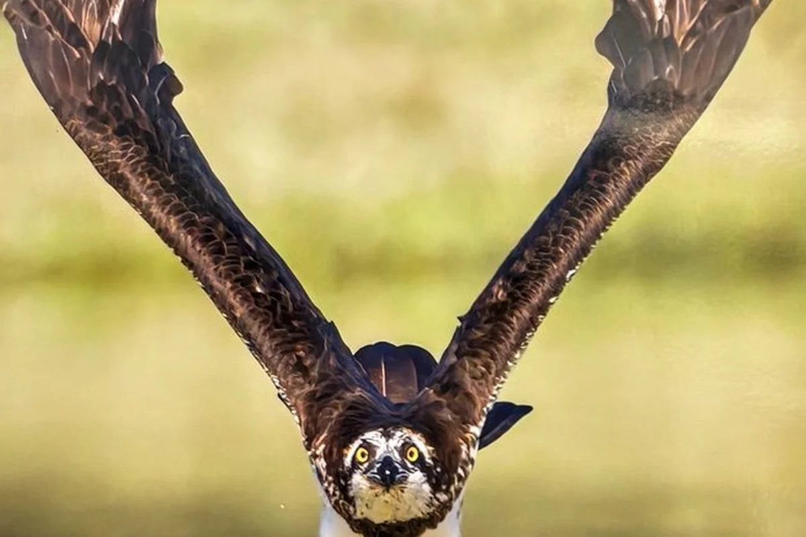
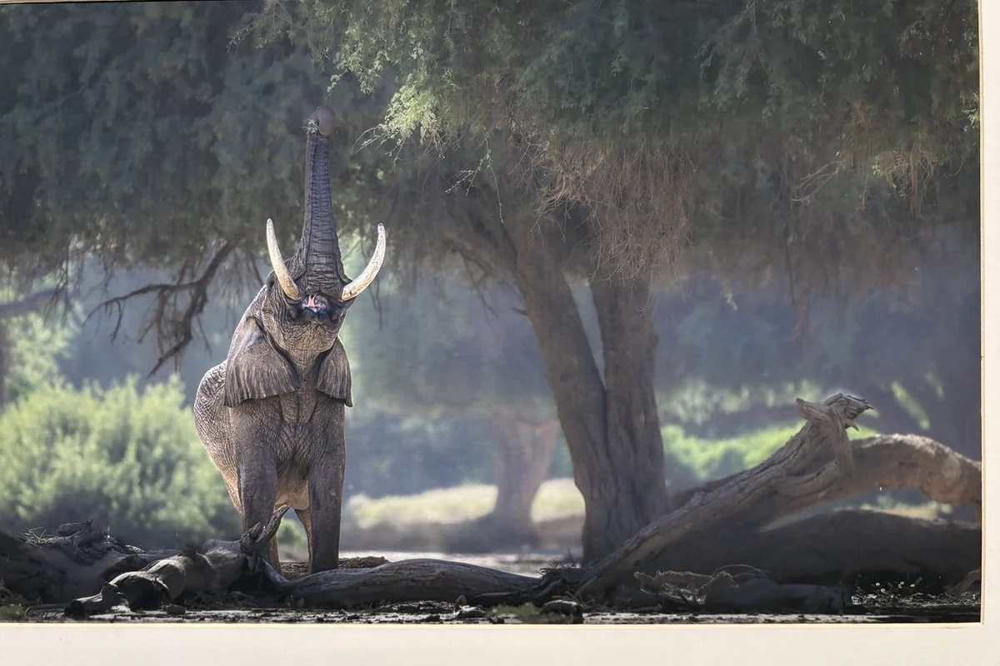
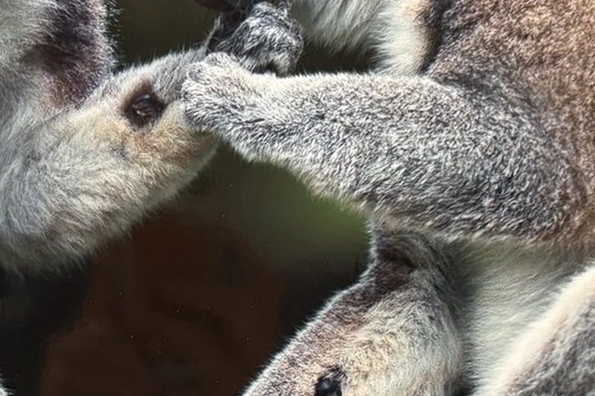
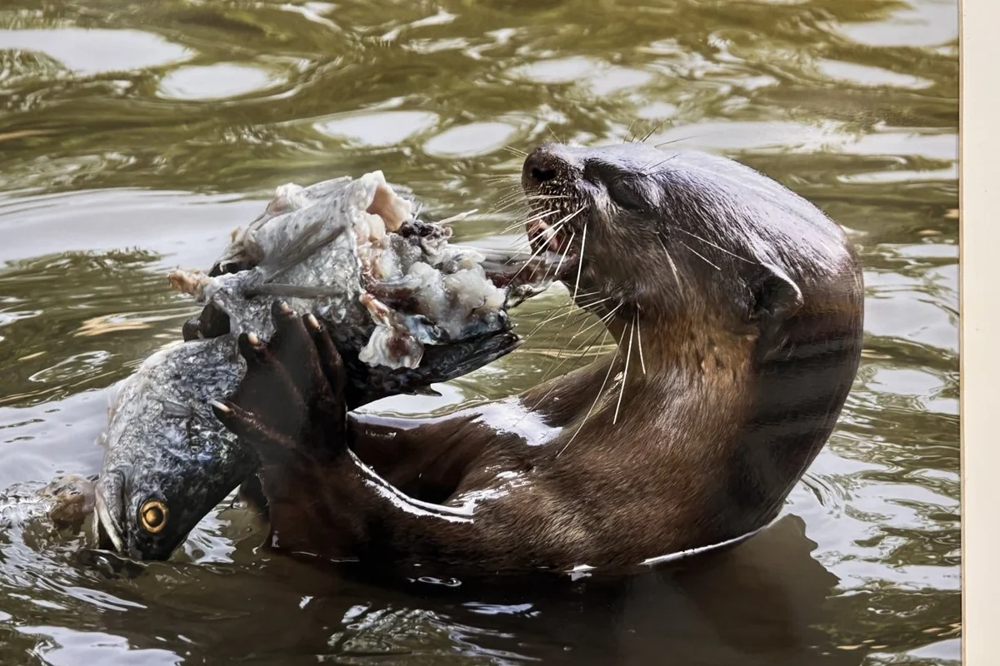

Observe
Begin with the catalogue photograph and the evidence visible in the scene.
Natural history learning atlas
Eight exhibition photographs become field studies in force, form, motion, adaptation, and nature-inspired design.




Begin with the catalogue photograph and the evidence visible in the scene.
Compare each image with science and maths explainers at two levels.
Follow the same natural principles into design systems.
Guided episode
Start with observation, reveal the science, test the maths model, then transfer the principle into nature-inspired design.
Field modules
A curated sequence of animal encounters, scientific principles, mathematical models, and biomimetic design routes.
No modules match that search.
Field episode
Interactive maths lab
Teacher guide
Show the original photo and ask what is happening before revealing the annotated visual.
Compare the original and the selected explainer side by side, then identify which ideas became visible.
Use the Nature → Design mode to discuss how natural principles are translated into design.
Invite students to build their own mini module from a new wildlife image using the same structure.
Observe
Original photo
Build log